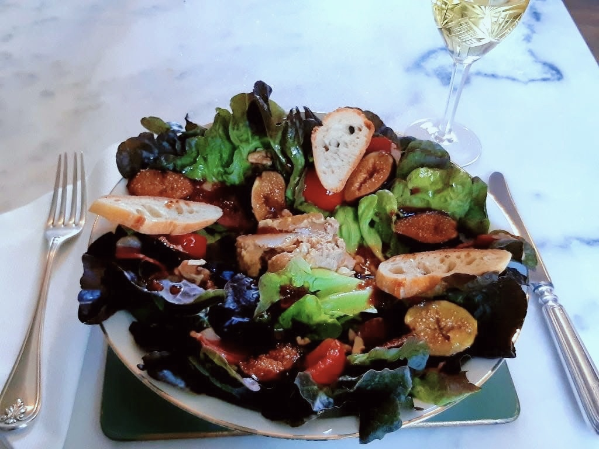
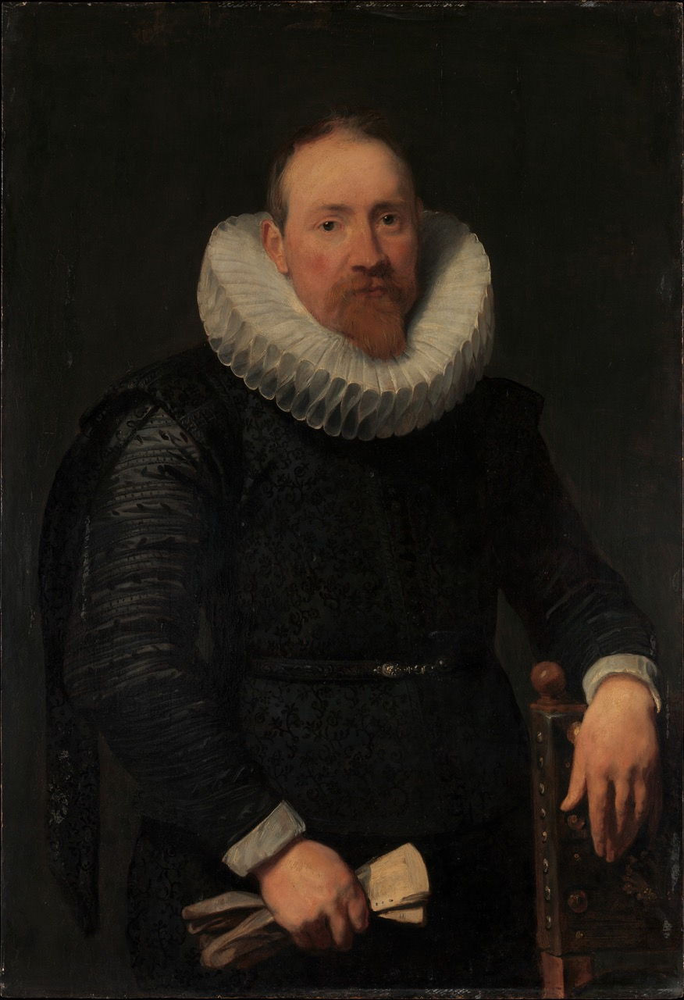

There is something movingly fragile about the way a seventeenth-century still life exposes the flesh of a split fig. The purple skin gives way to reveal an interior with the texture and color of a tender wound. It is not merely food; it is time settling onto the canvas as I look at it. One of those sensory, almost tactile epiphanies that art springs on me when I least expect it.

During a visit to Montefalco many years ago, on a sunny morning in mid-March, I was struck by a detail in the cycle of Stories of Saint Francis that Benozzo Gozzoli painted in the church dedicated to the saint. On the right wall of the apse there is a panel depicting the banquet at the house of the Lord of Celano. Giotto also illustrated this episode in the Upper Basilica of Assisi, but Gozzoli brings to it a touching naturalism already evident in his famous scene of Saint Francis preaching on the plain of Bevagna, where he portrays the local birds with remarkable accuracy.
On the nobleman’s table, laid with the damask linen for which Montefalco is renowned, a page has just set down a plum tart. Its lattice of pastry reinforces the perspective of the painting. At home, crostate were baked every week and eaten after meals, for breakfast, or with afternoon tea. The sight of that familiar dessert instantly brought to my mouth the tangy sweetness of homemade preserves—mostly plum, though sometimes other seasonal fruit, to which Nazzarena or Augusta always added a little grape must. Instead of lard the cooks used sugna, a finer pork fat that made their pastry especially flaky. They baked their incomparable tarts in old round copper pans with delicately rolled rims, pans that now hang polished and gleaming in my mother’s kitchen.
It was just after one o’clock when I left the church,. The paintings—and the hour—had sharpened my appetite. The shops were closed, and the curfew-like stillness that settles over Italian towns at lunchtime did the rest. It was far too pleasant an afternoon to remain indoors. Reaching the deserted square, I decided to have lunch beneath the arcades of a trattoria, where the sun immediately warmed the white tablecloth laid by the young waitress who came to take my order.

I chose a broad-bean soup and a glass of the local Sagrantino. The wait was brief: a mobile phone rang somewhere in a side street, a customer lingered in conversation with the owner, pigeons pecked at crumbs among the squat concrete planters arranged by the town council. Then the soup arrived, steaming, dark and thick, accompanied by the local olive oil—with its pleasantly bitter edge—along with toasted bread and the glass of ruby-red wine.
That unexpected intersection of art and appetite returned to me years later in Paris.
There is an extraordinary museum there, usually relegated to the second tier of attractions, somewhere beyond the obligatory list of must-see sights. It is the former home of the banker Édouard André, built on Boulevard Haussmann in all the splendor of the Second Empire. He married the artist Nélie Jacquemart, a woman of modest origins but extraordinary discernment. What makes their collection so remarkable is that, upon her death, Madame André left the property to the Institut de France on the condition that every object remain exactly where she had placed it.

Wandering through the rooms of the Musée Jacquemart-André, one has the uncanny sensation of stepping directly into the residence of a wealthy nineteenth-century banker, of inhabiting the world of Zola or Proust. At the end of a visit, guests may sit down to lunch in the palace’s sumptuous former dining room beneath a ceiling fresco by Tiepolo. In truth, it is a splendid illusion: a fresco that the Andrés had detached from the walls of a Venetian villa and transported to Paris, installing it overhead to lend a baroque soul to the era of Napoleon III and Empress Eugénie.
There is a subtle vertigo in bringing art onto one’s plate, a way of prolonging the museum’s enchantment into the ordinary rituals of daily life. With that thought in mind, I decided to recreate one of the salades composées served in the museum restaurant, each named after an artist represented in the collection: Bellini, Mantegna, Tiepolo, Raphael, Botticelli, Vigée Le Brun.

My favorite is the Van Dyck, and in the southwest of France, where I live, its ingredients are easy enough to find. You begin with a bed of feuille de chêne lettuce, whose “oak leaves” range from pale green to deep brown and crimson at the curled tips. To this are added slices of smoked duck breast, figs sautéed in brown sugar, cherry tomatoes lightly seared in a pan, walnut kernels, and a generous medallion of foie gras. The salad may be dressed with raspberry vinaigrette or with olive—or walnut— oil and fig chutney, then finished with slices of toasted bread.

Why Van Dyck? The Titian-red hair, the ruddy complexions of his sitters, the rich browns and elaborate ruffs of his portraits all seem to find an intriguing correspondence in the ingredients themselves.